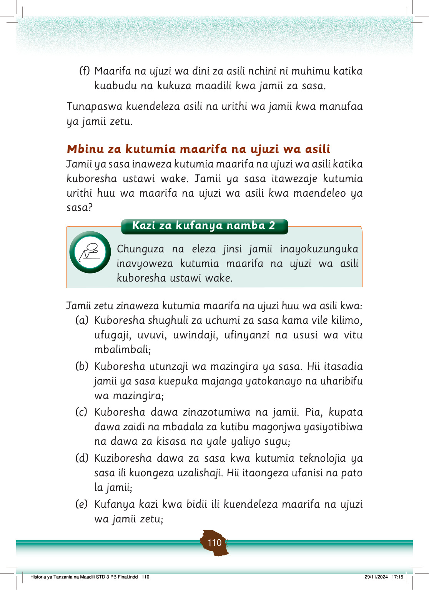

(f) Maarifa na ujuzi wa dini za asili nchini ni muhimu katika kuabudu na kukuza maadili kwa jamii za sasa.
Tunapaswa kuendeleza asili na urithi wa jamii kwa manufaa ya jamii zetu.
Mbinu za kutumia maarifa na ujuzi wa asili
Jamii ya sasa inaweza kutumia maarifa na ujuzi wa asili katika kuboresha ustawi wake.
Jamii ya sasa itawezaje kutumia urithi huu wa maarifa na ujuzi wa asili kwa maendeleo ya sasa?
Jamii zetu zinaweza kutumia maarifa na ujuzi huu wa asili kwa:
(a)
Kuboresha shughuli za uchumi za sasa kama vile kilimo, ufugaji, uvuvi, uwindaji, ufinyanzi na ususi wa vitu mbalimbali;
(b)
Kuboresha utunzaji wa mazingira ya sasa.
Hii itasadia jamii ya sasa kuepuka majanga yatokanayo na uharibifu wa mazingira;
(c)
Kuboresha dawa zinazotumiwa na jamii.
Pia, kupata dawa zaidi na mbadala za kutibu magonjwa yasiyotibiwa na dawa za kisasa na yale yaliyo sugu;
(d)
Kuziboresha dawa za sasa kwa kutumia teknolojia ya sasa ili kuongeza uzalishaji.
Hii itaongeza ufanisi na pato la jamii;
(e)
Kufanya kazi kwa bidii ili kuendeleza maarifa na ujuzi wa jamii zetu;
Kazi za kufanya namba 2
Chunguza na eleza jinsi jamii inayokuzunguka inavyoweza kutumia maarifa na ujuzi wa asili kuboresha ustawi wake.